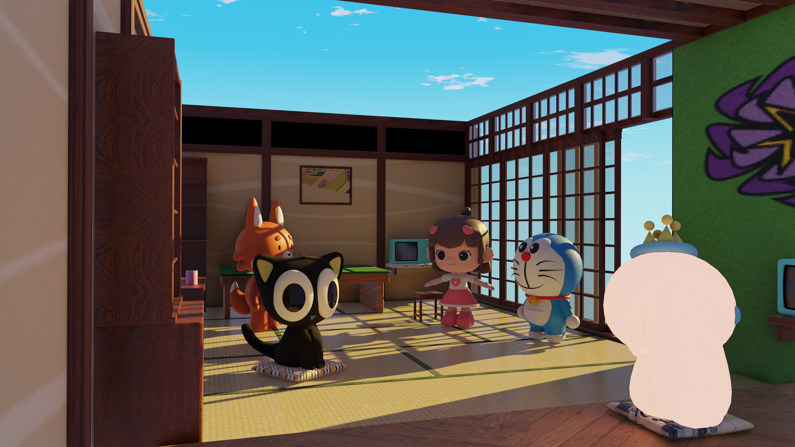
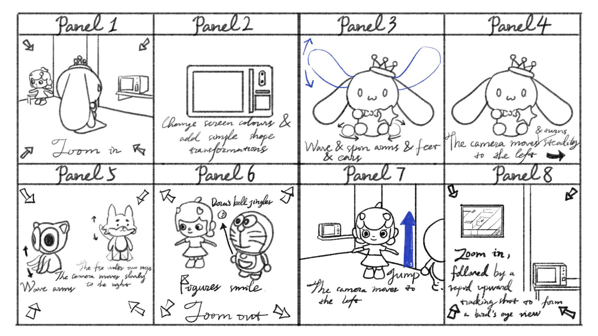
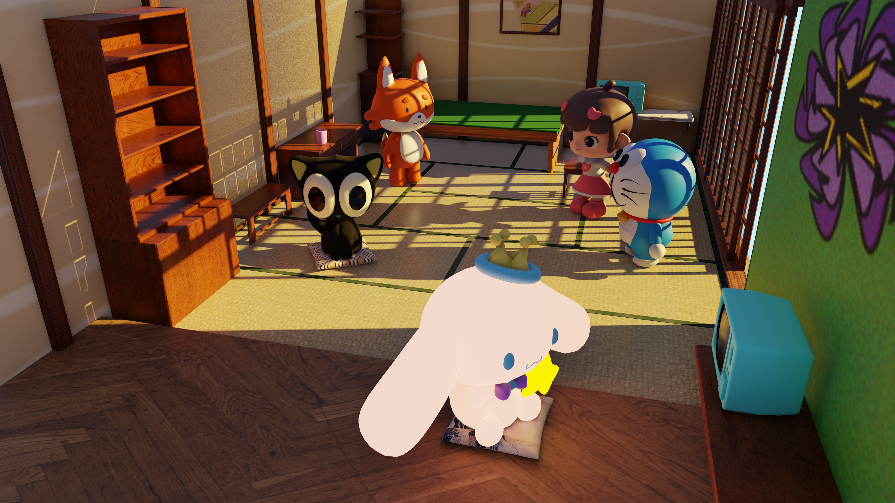
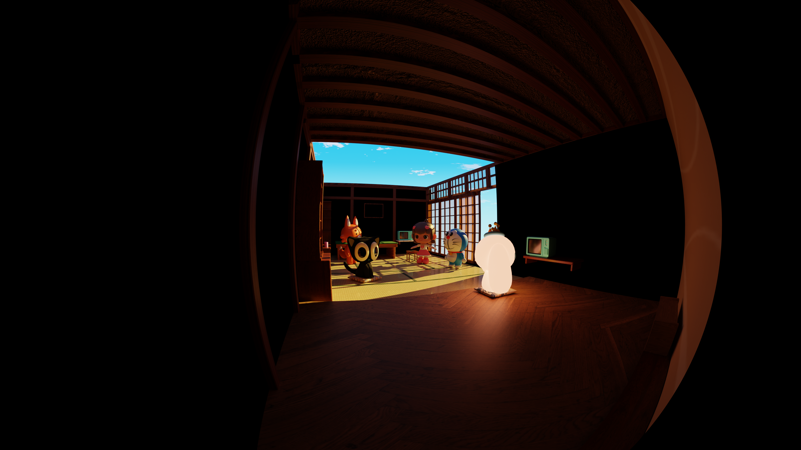
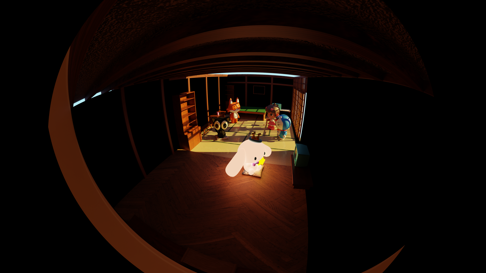
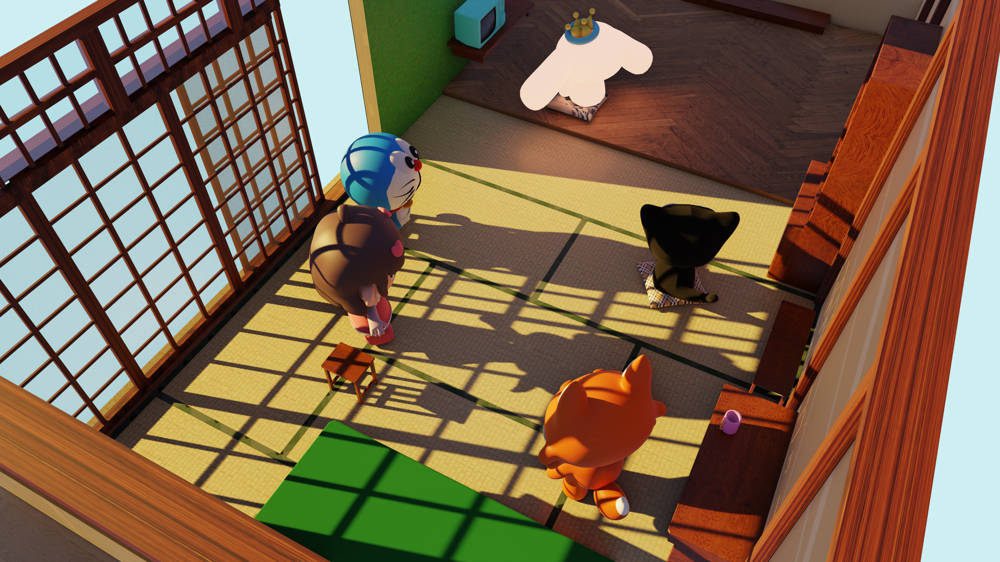

Camera choreography
An exterior entrance, an open door, an interior pan, and a final overhead rotation give the film a clear spatial rhythm.
Visual Design · Offline Animation · Blender
动漫奇幻之家
A 25-second animated room where a doorway becomes an invitation: screens flicker, characters answer, sunlight turns, and the camera finds a new point of view.
Watch the film
01 / The finished movement
25 sec · two connected camera shots · original Blender animation
02 / Plan before pixels
The storyboard maps the camera’s passage from character gestures to a final upward view, making the space feel like a small world rather than a static set.

03 / Motion language
An exterior entrance, an open door, an interior pan, and a final overhead rotation give the film a clear spatial rhythm.
Shape keys deform selected forms while object transforms animate gestures, rotations, and location changes in dialogue with the screens.
Two masked playback videos turn the TVs into active surfaces; rotating sunlight changes the room’s colour and atmosphere around them.
04 / Building the world
Lighting studies from the Blender scene test how the same interior changes between an open, saturated daytime world and a darker threshold view.




05 / Problem-solving in 3D
The character was assembled from separate objects. To prevent pieces from drifting apart during location animation, the torso became the parent object and the head and limbs were kept as transformed children. A separate origin correction stopped the eyes rotating around the feet.